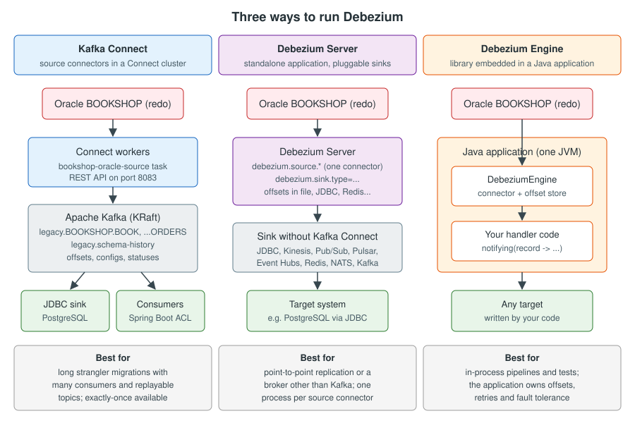

Debezium Architecture
|
This content was generated with the assistance of AI and should be verified against the official documentation before being relied on in production. |
Before writing a single connector configuration it pays to know which moving parts Debezium has, where each one keeps its state, and what happens to that state when a process restarts. A migration runs for weeks or months: the pipeline that copies the legacy Bookshop Oracle schema into the new PostgreSQL database will be restarted, upgraded, rescheduled onto other machines and occasionally broken. Everything that keeps it correct through those events, such as offsets, the schema history and the per-table topics, is part of the architecture described on this page.
The page covers the three ways to run Debezium (Kafka Connect, Debezium Server and the Debezium Engine), how a connector reads the log of each database, the lifecycle of a connector (snapshot, then streaming), offsets, the schema history topic, how topics are named, and which runtime suits which kind of migration. The concepts behind the pipeline (log-based CDC, the strangler fig and the anti-corruption layer) are explained in Migration Strategies and Migration Patterns with CDC; the Kafka Connect runtime itself is explained in Kafka Connect.
Checked on 2026-11-09 against Debezium 3.7.1.Final, with Apache Kafka 4.3.1 (the version shipped in the
quay.io/debezium/kafka:3.7.1.Final and quay.io/debezium/connect:3.7.1.Final images), Oracle AI Database 26ai Free
(image gvenzl/oracle-free:23.26.3) and PostgreSQL 18. The configuration on this page is derived from the official documentation; the Kafka Connect worker
it relies on was started with Docker on 2026-11-09 (see
Installing Debezium), and the Oracle connector configuration
below was checked with the Connect validation endpoint, but the full pipeline was not run against a database on this
page.
The big picture
Debezium is a set of source connectors. Each connector knows how to read the change log of one kind of database
(the Oracle redo log, the PostgreSQL write-ahead log, the MySQL binary log, the SQL Server change tables, the MongoDB
oplog through change streams and so on) and turns every committed row change into a change event. A change event
carries the row state before and after the change, the operation (c, u, d, r for snapshot reads, t for
truncate), and a source block with the position in the log, the transaction id and timestamps. The structure is
described in detail in Anatomy of a Change Event.
The connector code is the same in every deployment. What changes is the runtime that hosts the connector, stores its state and delivers its events:
-
Kafka Connect. The connector runs as a plug-in inside a Kafka Connect cluster. Events go to Kafka topics. Offsets, connector configurations and statuses live in Kafka topics too. This is the most common deployment and the one the official architecture page describes first.
-
Debezium Server. A ready-made Quarkus application that runs exactly one source connector and sends events to a sink: Amazon Kinesis, Google Cloud Pub/Sub, Apache Pulsar, Azure Event Hubs, Redis Streams, NATS, RabbitMQ Streams, a JDBC database, Apache Kafka and others. No Kafka Connect cluster is needed.
-
Debezium Engine. A Java library. Your application builds a
DebeziumEngine, gives it the connector configuration and a callback, and receives the change events in-process. The application is responsible for storing offsets and for fault tolerance.

The same Oracle redo log can be read by any of the three. The difference lies in what you get around it: a replayable, multi-consumer event log (Kafka), a lightweight one-hop pipe (Server) or full control inside one JVM (Engine).
Debezium on Kafka Connect
Kafka Connect is a framework and runtime for source connectors that send records into Kafka and sink connectors that write records from Kafka topics to other systems. Debezium connectors are source connectors. Kafka Connect runs as a separate service next to the Kafka brokers, usually as a cluster of workers that share the work.
The pieces in the diagram are:
- Workers
-
JVM processes that run connector instances and their tasks. Workers that share the same
group.idform one cluster. If a worker dies, the remaining workers rebalance and restart its tasks. The Debezium relational connectors run a single task (tasks.maxis1), because the change log of one database must be read in order by one reader. - Internal topics
-
The cluster stores connector configurations (
config.storage.topic), source offsets (offset.storage.topic) and connector and task statuses (status.storage.topic) in Kafka. Because the state is in Kafka and not on a worker’s disk, a task can resume on any worker. - REST API
-
Connectors are created, inspected, paused, restarted and deleted through the REST API, by default on port 8083. In the examples of this section it is
http://localhost:8083. - Converters
-
Connect converts each record to bytes with the worker’s key and value converters (JSON by default, or Avro, Protobuf or JSON Schema with a schema registry). See Serialization & Schema Registries.
- Transformations
-
Single message transformations (SMTs) can rename topics, flatten events or route outbox rows before the record is written. See Debezium Transformations.
Once change events are in Kafka, any number of consumers can read them independently: the Debezium JDBC sink connector
copying rows into mirror tables, the Spring Boot bookshop application translating legacy rows into the new model, a
reconciliation job, a search indexer. Each consumer keeps its own position, and a new consumer can start from the
beginning of a topic as long as the topic still holds the data. For a long strangler migration this is the main reason
to choose Kafka Connect.
The Bookshop source connector is registered with one REST call. The full set of Oracle properties is explained in
Oracle Connector. For the architecture, the parts that matter are the
connection, the logical name, the captured tables and the schema history. The configuration below is the one the
worked example registers, so it also carries the rest
of the canonical Bookshop settings: decimal.handling.mode=string, log.mining.strategy=hybrid (so that DDL on captured
tables is tracked), the initial snapshot, transaction metadata, a heartbeat, and the signal and notification channels.
It sets no converters: the worker’s default JsonConverter embeds the schema in every key and value, which the JDBC
sink needs.
{
"name": "bookshop-oracle-source",
"config": {
"connector.class": "io.debezium.connector.oracle.OracleConnector",
"tasks.max": "1",
"database.hostname": "oracle",
"database.port": "1521",
"database.user": "c##dbzuser",
"database.password": "dbz",
"database.dbname": "FREE",
"database.pdb.name": "FREEPDB1",
"topic.prefix": "legacy",
"table.include.list": "BOOKSHOP.AUTHOR,BOOKSHOP.BOOK,BOOKSHOP.CUSTOMER,BOOKSHOP.ORDERS,BOOKSHOP.ORDER_LINE,BOOKSHOP.SUPPLIER_CATALOGUE",
"snapshot.mode": "initial",
"decimal.handling.mode": "string",
"log.mining.strategy": "hybrid",
"schema.history.internal.kafka.bootstrap.servers": "kafka:9092",
"schema.history.internal.kafka.topic": "legacy.schema-history",
"schema.history.internal.store.only.captured.tables.ddl": "false",
"provide.transaction.metadata": "true",
"heartbeat.interval.ms": "10000",
"signal.enabled.channels": "source,kafka",
"signal.data.collection": "FREEPDB1.BOOKSHOP.DEBEZIUM_SIGNAL",
"signal.kafka.topic": "legacy.signals",
"signal.kafka.bootstrap.servers": "kafka:9092",
"notification.enabled.channels": "sink",
"notification.sink.topic.name": "legacy.notifications"
}
}database.dbname is the container database (FREE in Oracle AI Database 26ai Free) and database.pdb.name is the
pluggable database that holds the BOOKSHOP schema. The password is shown in clear text only to keep the example
short; Installing Debezium
shows how to load it from a file or an environment variable through a configuration provider.
curl -i -X POST -H "Accept: application/json" -H "Content-Type: application/json" \
http://localhost:8083/connectors/ -d @bookshop-oracle-source.json
curl -s http://localhost:8083/connectors/bookshop-oracle-source/statusHow a connector reads the log
A Debezium connector never queries the captured tables to find changes (apart from the snapshot, described below). It
reads the log that the database already writes for recovery or replication. That is why it sees every committed
change, including deletes and intermediate states, without a LAST_UPD column and without triggers. The mechanism
differs per database, and so do the prerequisites a DBA must put in place on the legacy system:
| Connector | What it reads | Database prerequisites (summary) |
|---|---|---|
Oracle |
Redo and archive logs through LogMiner (adapter |
|
PostgreSQL |
The write-ahead log through a logical replication slot, decoded by |
|
MySQL and MariaDB |
The binary log, read as a replica would read it |
|
SQL Server |
The change tables that SQL Server CDC fills from the transaction log |
CDC enabled on the database and on each captured table, SQL Server Agent running |
MongoDB |
Change streams on a replica set or sharded cluster |
A replica set or sharded cluster (a standalone server is not supported) |
Each connector page explains its prerequisites in full: Oracle, PostgreSQL, MySQL and MariaDB, SQL Server, MongoDB and Db2, Informix, Cassandra and the others.
For the Bookshop migration, the Oracle mechanism has two consequences worth understanding early:
-
The redo log does not contain table or column names, only object identifiers and change vectors. The connector combines what LogMiner returns with its own in-memory model of each table’s structure. That model is rebuilt on every restart from the schema history topic (see below), which is why the topic must never be lost.
-
In the default
logmineradapter, Oracle returns changes from in-flight transactions interleaved with each other, and the connector buffers them until it sees the commit or rollback. Only committed transactions are emitted, but the connector needs enough memory for the largest legacy batch job. Thelogminer_unbufferedadapter asks Oracle to return only committed changes and moves that memory burden to the database’s PGA.
{
"database.connection.adapter": "logminer"
}Reference: Debezium — Oracle adapter modes
The connector lifecycle: snapshot, then streaming
Database logs are not kept forever. When Debezium is pointed at a legacy database that has been running for years, the
log no longer contains the inserts that created most of its rows. So, the first time a connector starts and finds no
stored offset, it normally takes a snapshot: it records the current log position, reads the existing rows of every
captured table as r (read) events, and then starts streaming from the recorded position. Nothing that commits during
the snapshot is lost, because streaming starts from the position recorded before the rows were read.
The snapshot modes (initial, no_data, when_needed, recovery and others), incremental snapshots that run while
streaming continues, and blocking snapshots are covered in
Initial Snapshots and
Incremental & Blocking Snapshots. For the architecture
it is enough to know that the snapshot and the stream produce events of the same shape on the same topics, so a
consumer such as the JDBC sink does not need to know which phase an event came from (the source.snapshot field tells
it if it cares).
Offsets
An offset is the connector’s bookmark in the source log. For Oracle it contains the SCN (system change number) and
the commit SCN; for PostgreSQL the LSN; for MySQL the binlog file name, position and GTID set; for SQL Server the
commit and change LSNs. Each change event also carries its position in the source block, so a consumer can see
exactly where an event came from.
The offset is not written for every event. Kafka Connect collects the offsets of records that Kafka has acknowledged
and flushes them every offset.flush.interval.ms (60 seconds by default in the Debezium Connect image). When the
connector restarts it resumes from the last flushed offset. Any events produced after that flush and before the stop
are produced again. That is the origin of Debezium’s at-least-once guarantee, explained in
Features & Delivery Guarantees.
Where the offsets live depends on the runtime:
| Runtime | Default offset store | Other options |
|---|---|---|
Kafka Connect (distributed) |
|
A connector can be given its own offsets topic with the connector-level |
Kafka Connect (standalone) |
|
— |
Debezium Server |
|
|
Debezium Engine |
|
The same stores as Debezium Server, or Kafka |
Offsets matter during a migration in three ways:
-
They must survive. An offset stored on a container’s ephemeral disk is lost when the container is replaced. The connector then behaves as if it were new and, depending on the snapshot mode, either re-snapshots the whole legacy schema or fails. With Kafka Connect in distributed mode the offsets are in Kafka and survive any worker.
-
The source log must still contain them. If the connector is stopped for longer than the legacy database retains its archived redo logs (or the PostgreSQL slot is dropped, or the MySQL binlog is purged), the stored position no longer exists. Restarting requires a new snapshot. Offsets, Restarts & Exactly-Once covers detection and recovery.
-
They can be moved. Since Kafka 3.6, the Connect REST API can read, alter and reset the offsets of a stopped connector, which is the supported way to replay or skip part of the log.
curl -s http://localhost:8083/connectors/bookshop-oracle-source/offsetsThe storage options outside Kafka (file, JDBC, Redis and others) are described on the official Store Debezium state page.
The schema history topic
Relational connectors whose logs do not carry full table definitions, namely Oracle, MySQL, MariaDB, SQL Server and Db2, keep an internal schema history. Every time the connector sees DDL (during the snapshot, or in the log while streaming) it writes the statement and the log position where it appeared to the schema history. After a restart, it replays the history up to the stored offset so that it can interpret older log entries with the table structure that was in force when they were written.
For the Bookshop connector the history goes to the topic legacy.schema-history, set by
schema.history.internal.kafka.topic. The topic is for the connector’s internal use only and consumers must not
rely on it. Consumers that need to see schema changes read the separate schema change topic instead. Its name is the
topic.prefix value (legacy), and the Oracle connector writes to it by default (include.schema.changes defaults
to true); see Handling Schema Changes.
schema.history.internal.kafka.bootstrap.servers=kafka:9092
schema.history.internal.kafka.topic=legacy.schema-history
# The default: record the DDL of every table, not only of the captured ones, so that a table
# added to table.include.list later (or captured by a rollback pipeline) already has its history
schema.history.internal.store.only.captured.tables.ddl=falseReference: Debezium — Oracle schema history properties
The official installation page lists the topic settings that the schema history topic needs. They differ from the data topics, and getting them wrong is a classic cause of a connector that cannot restart:
-
Infinite (or very long) retention and no compaction. Every DDL statement must stay available. A compacted or time-limited history topic loses the old DDL, and the connector fails on restart with an error about missing history.
-
A single partition, so the DDL is read back in order.
-
Replication factor of at least 3 in production.
kafka-topics.sh --bootstrap-server localhost:9092 --create \
--topic legacy.schema-history \
--partitions 1 --replication-factor 3 \
--config cleanup.policy=delete --config retention.ms=-1 --config retention.bytes=-1Reference: Debezium — Configuring Debezium topics
In Debezium Server and the Engine the schema history can instead be stored in a file
(io.debezium.storage.file.history.FileSchemaHistory), Redis, Amazon S3, Azure Blob Storage, RocketMQ or a JDBC
table. The same durability rule applies: losing the history is as serious as losing the offsets.
Topics per table
By default a relational connector writes the events of each captured table to its own topic, named
topicPrefix.schemaName.tableName. With topic.prefix=legacy the Bookshop topics are:
| Legacy table | Topic |
|---|---|
|
|
|
|
|
|
|
|
|
|
|
|
The upper-case names are not a typo. Oracle stores unquoted identifiers in upper case, and the connector uses them
as they are. If topics are created in advance with lower-case names, the connector cannot find them and fails because
it is not allowed to create legacy.BOOKSHOP.BOOK. Either create the topics with the upper-case names, let Connect
create them (see Installing Debezium), or rename them with the
topic routing SMT.
topic.prefix is more than a naming detail. It is the connector’s logical name: it appears in the source.name
field, it prefixes every topic, and it identifies the connector’s offsets and metrics. Changing it on an existing
connector makes Debezium treat the connector as new. Choose it once (legacy for the Oracle source, modern for the
reverse PostgreSQL source in Cut-over & Reverse Replication)
and never change it during the migration. Older documentation and blog posts use database.server.name for the same
purpose; that property was replaced by topic.prefix in Debezium 2.0.
One topic per table gives each table its own retention, partitioning and consumers, and keeps all events of one row in
order, because the event key is the row’s primary key and Kafka keeps per-key order within a partition. When several
tables must be processed together (for example ORDERS and ORDER_LINE for the LegacyOrderProjector), the
consumer subscribes to both topics, or the topic routing SMT sends them to one topic. Routing affects ordering and
key uniqueness, so read Debezium Transformations first.
Other topics a connector uses
Besides the per-table topics and the internal topics of Kafka Connect, a connector can write to or read from these topics. Apart from the schema history topic (for the connectors that need it) and the schema change topic (enabled by default), they appear only when the matching feature is configured.
| Topic | Bookshop name | Purpose |
|---|---|---|
Schema history |
|
Internal DDL history (Oracle, MySQL, MariaDB, SQL Server, Db2) |
Schema change topic |
|
DDL events for consumers ( |
Transaction metadata |
|
BEGIN and END events, when |
Heartbeats |
|
Periodic events that keep offsets moving when captured tables are quiet |
Signals |
|
Commands sent to the connector over the Kafka signal channel |
Notifications |
|
Progress notifications, such as incremental snapshot status |
Transaction metadata is explained in Features & Delivery Guarantees, heartbeats in Offsets, Restarts & Exactly-Once, and signals and notifications in Signaling & Notifications.
Debezium Server
Debezium Server is a configurable, ready-to-use application that runs one Debezium source connector and streams its
change events to a messaging or storage system. Events can be serialized as JSON, Avro, Protobuf, CloudEvents and other
formats. It needs Java 21 or later (the quay.io/debezium/server:3.7.1.Final image includes it).
Configuration lives in config/application.properties and is divided by prefix:
-
debezium.source.*— the connector configuration, with the same property names as on Kafka Connect, plus the offset and schema history storage that Kafka Connect would otherwise handle. -
debezium.sink.*— the sink type and its settings. -
debezium.format.*— the key and value serialization. -
debezium.transforms.*anddebezium.predicates.*— SMTs and predicates.
For a migration, the JDBC sink makes Debezium Server a single process that replicates tables from the legacy database
straight into the new one, with no Kafka at all. The example below copies the Bookshop catalogue tables into the
PostgreSQL mirror tables (legacy_book, legacy_author, legacy_supplier_catalogue), the same job the
bookshop-pg-mirror-sink connector does on Kafka Connect.
# Sink: write change events straight into PostgreSQL
debezium.sink.type=jdbc
# stringtype=unspecified lets PostgreSQL cast the NUMBER strings into bigint and numeric columns
debezium.sink.jdbc.connection.url=jdbc:postgresql://postgres:5432/bookshop?stringtype=unspecified
debezium.sink.jdbc.connection.username=bookshop_mirror
debezium.sink.jdbc.connection.password=change-me
debezium.sink.jdbc.insert.mode=upsert
debezium.sink.jdbc.primary.key.mode=record_key
debezium.sink.jdbc.delete.enabled=true
# The legacy_* mirror tables are created beforehand, as for the bookshop-pg-mirror-sink connector
debezium.sink.jdbc.schema.evolution=none
debezium.sink.jdbc.quote.identifiers=false
# "$$" escapes the "$" so that Quarkus passes ${source.table} through to the sink unchanged
debezium.sink.jdbc.collection.name.format=legacy_$${source.table}
# Source: the Bookshop Oracle schema
debezium.source.connector.class=io.debezium.connector.oracle.OracleConnector
debezium.source.database.hostname=oracle
debezium.source.database.port=1521
debezium.source.database.user=c##dbzuser
debezium.source.database.password=dbz
debezium.source.database.dbname=FREE
debezium.source.database.pdb.name=FREEPDB1
debezium.source.topic.prefix=legacy
debezium.source.table.include.list=BOOKSHOP.BOOK,BOOKSHOP.AUTHOR,BOOKSHOP.SUPPLIER_CATALOGUE
debezium.source.decimal.handling.mode=string
# State that Kafka Connect would keep in Kafka must be stored explicitly
debezium.source.offset.storage=org.apache.kafka.connect.storage.FileOffsetBackingStore
debezium.source.offset.storage.file.filename=data/offsets.dat
debezium.source.offset.flush.interval.ms=0
debezium.source.schema.history.internal=io.debezium.storage.file.history.FileSchemaHistory
debezium.source.schema.history.internal.file.filename=data/schema-history.datReference: Debezium Server — JDBC sink configuration
Several points in this file are specific to Debezium Server and are easy to get wrong:
-
Debezium Server reads its configuration through MicroProfile Config, which expands
${...}expressions. A JDBC sink placeholder such as${source.table}must be written as$${source.table}, or Quarkus tries to resolve it and fails at startup. -
The
datadirectory must exist before the server starts, and in a container it must be a persistent volume (/debezium/datain the official image). Otherwise the offsets and the schema history disappear with the container. -
The official documentation states that the Debezium Server distribution does not include JDBC drivers for target databases, and that the Oracle JDBC driver must be copied to the
libdirectory before the server is started with the Oracle connector. Check thelibdirectory of the version you deploy. -
The documentation also states that the JDBC sink in Debezium Server does not yet offer the same delivery guarantees as the JDBC sink connector on Kafka Connect: offset management, exactly-once and automatic retries can behave differently. Upserts by primary key make replays harmless for the mirror tables, but test a restart before relying on it.
Debezium Server covers the sinks, the container image, and running it on Kubernetes with the Debezium Operator.
Debezium Engine
The Debezium Engine (the debezium-embedded artifact) runs a connector inside your own JVM application. The
application builds an engine with a configuration and a callback, runs it on an executor, and receives each change
event in the callback. There is no Kafka, no Connect cluster and no separate process.
package com.example.bookshop.migration;
import io.debezium.engine.ChangeEvent;
import io.debezium.engine.DebeziumEngine;
import io.debezium.engine.format.Json;
import java.io.IOException;
import java.util.Properties;
import java.util.concurrent.ExecutorService;
import java.util.concurrent.Executors;
import java.util.concurrent.TimeUnit;
public final class EmbeddedLegacyCapture {
public static void main(String[] args) throws IOException, InterruptedException {
Properties props = new Properties();
props.setProperty("name", "bookshop-embedded");
props.setProperty("connector.class", "io.debezium.connector.oracle.OracleConnector");
// The application owns the offsets and the schema history
props.setProperty("offset.storage", "org.apache.kafka.connect.storage.FileOffsetBackingStore");
props.setProperty("offset.storage.file.filename", "/var/lib/bookshop/offsets.dat");
props.setProperty("offset.flush.interval.ms", "10000");
props.setProperty("schema.history.internal", "io.debezium.storage.file.history.FileSchemaHistory");
props.setProperty("schema.history.internal.file.filename", "/var/lib/bookshop/schema-history.dat");
// Connector properties, as on Kafka Connect
props.setProperty("database.hostname", "oracle");
props.setProperty("database.port", "1521");
props.setProperty("database.user", "c##dbzuser");
props.setProperty("database.password", "dbz");
props.setProperty("database.dbname", "FREE");
props.setProperty("database.pdb.name", "FREEPDB1");
props.setProperty("topic.prefix", "legacy");
props.setProperty("table.include.list", "BOOKSHOP.BOOK,BOOKSHOP.AUTHOR");
props.setProperty("decimal.handling.mode", "string");
ExecutorService executor = Executors.newSingleThreadExecutor();
try (DebeziumEngine<ChangeEvent<String, String>> engine = DebeziumEngine.create(Json.class)
.using(props)
.notifying(record -> {
// record.destination() is the would-be topic, e.g. legacy.BOOKSHOP.BOOK
System.out.println(record.destination() + " " + record.key());
})
.build()) {
executor.execute(engine);
Runtime.getRuntime().addShutdownHook(new Thread(executor::shutdown));
executor.awaitTermination(Long.MAX_VALUE, TimeUnit.DAYS);
}
}
}Reference: Debezium Engine — In the code
The application needs io.debezium:debezium-api, io.debezium:debezium-embedded and the connector artifact
(io.debezium:debezium-connector-oracle), all at version 3.7.1.Final, on Java 17 or later. The trade-off is stated
plainly in the official documentation: the engine is light, but it is not as fault tolerant as Kafka Connect, because
the application must keep all the state that Kafka would otherwise store in replicated logs. If the offsets file is lost,
the engine starts from scratch; if the callback fails half-way through a batch, the application decides what is
retried. Debezium Engine (Embedded) covers the asynchronous engine, the
ChangeConsumer interface for batch handling, offset commit control and the Quarkus extension.
Running Debezium on Kubernetes
The three runtimes above are also available as Kubernetes-native deployments:
-
Kafka Connect with Strimzi. The Strimzi operator deploys Kafka, a Kafka Connect cluster (
KafkaConnect, which can build an image with the Debezium plug-ins) and connectors (KafkaConnector) as custom resources. This is the recommended way to run Debezium on Kafka Connect in Kubernetes. -
The Debezium Operator manages Debezium Server instances through a
DebeziumServercustom resource. -
The Debezium Management Platform adds a web console and an API on top of the operator to define sources, destinations, transformations and pipelines. It replaces the old Debezium UI, which is no longer developed.
The details are in Running on Kubernetes.
Which runtime for which migration
All three runtimes run the same connectors and produce the same change events, so the choice rests on how many systems need the events, which broker you already operate and how much state management you want to own.
| Concern | Kafka Connect | Debezium Server | Debezium Engine |
|---|---|---|---|
Typical migration use |
Long strangler migration of Bookshop: mirror tables, translating consumers, reconciliation and reverse replication all reading the same topics |
Point-to-point replication into one target (for example JDBC into PostgreSQL), or events to a broker that is not Kafka (Kinesis, Pub/Sub, Pulsar, Event Hubs, RabbitMQ Streams) |
A pipeline inside one application, a migration tool, or integration tests |
Consumers |
Any number, each with its own position; topics can be replayed |
One sink per server instance |
One callback in one JVM |
State (offsets, schema history) |
Kafka topics, replicated |
File, JDBC, Redis or other store, configured by you |
Configured and owned by the application |
Failover |
Automatic task rebalancing across workers |
Restart of the process (by Kubernetes or the Debezium Operator) |
Whatever the application implements |
Exactly-once delivery |
Supported for the main connectors through Kafka Connect (KIP-618) |
Not provided by the runtime |
Not provided by the runtime |
Operational cost |
Kafka plus a Connect cluster |
One process per source connector |
None beyond the application |
For the Bookshop migration this section uses Kafka Connect throughout. The overlap period is long, several consumers
need the same events (the JDBC mirror sink, the bookshop-legacy-sync consumer group of the Spring Boot application,
the reconciliation jobs), and Kafka’s retention lets a new consumer or a repaired one replay history without touching
the legacy database again. Debezium Server is a good fit for a smaller, one-hop migration where Kafka would be
the largest piece of infrastructure in the project. The Engine fits when the migration logic already lives in one
service and losing in-process state can be tolerated or rebuilt.
Choosing a Deployment turns this table into a
decision guide.
What can go wrong
Most architecture-level failures come from state that was not stored where it was assumed to be:
-
Ephemeral offsets or history. Debezium Server or an Engine application running in a container without a persistent volume loses its offsets and schema history on every redeploy. Symptoms: a full re-snapshot after a deployment, or a failure because the schema history is missing.
-
A compacted or expiring schema history topic. The connector runs fine for weeks and fails on the next restart. Check the topic’s
cleanup.policyandretention.msbefore going live. -
A changed
topic.prefix. The connector starts with no offsets under the new name, re-snapshots, and writes to a new set of topics, so consumers keep listening to the old, now silent ones. -
Logs purged while the connector was down. The stored offset points to an archive log that no longer exists. Agree with the legacy DBAs on a log retention period that is longer than the longest outage you plan for.
-
Several connectors with the same logical name or history topic. Two connectors writing to one schema history topic corrupt each other’s history. Every connector needs its own
topic.prefixand its own history topic.
Verifying the architecture of a running pipeline
Once the connector is running, a handful of checks show that each part of the architecture is in place:
# The connector and its single task are RUNNING
curl -s http://localhost:8083/connectors/bookshop-oracle-source/status
# One topic per captured table, plus the schema history topic
kafka-topics.sh --bootstrap-server localhost:9092 --list | grep '^legacy\.'
# The schema history topic is single-partition, not compacted and kept forever
kafka-configs.sh --bootstrap-server localhost:9092 --describe --all \
--entity-type topics --entity-name legacy.schema-history | grep -E 'cleanup.policy|retention.ms'
# Offsets are stored and move forward while the legacy application writes
curl -s http://localhost:8083/connectors/bookshop-oracle-source/offsetsReference: Debezium — Configuring Debezium topics
Monitoring, Logging & Tracing adds the JMX metrics that show lag, snapshot progress and the queue sizes of each connector.